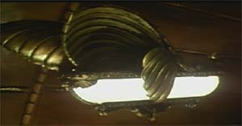

Una volta raggiunto il 7° livello i chierici di Loky possono creare uno speciale oggetto che è a metà strada tra un costruito e un oggetto magico. Si tratta di una lampada magica in grado di illuminare senza mai esaurirsi nelle zone vicine al possessore.
Queste lampade che prendono il nome di Lumi della Conoscenza, sono in grado di fluttuare nell'aria e seguire il loro proprietario. Sono utilizzate dai maghi e dai chierici nelle grandi biblioteche e dai nobili nelle loro lussuose residenze.

Costruire il Lume della Conoscenza
Per costruire il Lume della Conoscenza sono necessari gli stessi strumenti che si trovano nella Chambers of Automatons.
Inoltre sono richiesti speciali materiali da costruzione e un magico volume chiamato il Libro della Luce. Si tratta di uno speciale oggetto magico clericale (dal valore di 3000 corone e da 350 p.x.), costruito dai Chierici di Loky, dal quale il costruttore trarrà le formule speciali e il potere necessario all'attivazione del Lume. Il Chierico di Loky deve possedere il Libro della Luce per tutta la fase di costruzione del Lume.
Il costo dei materiali di costruzione varia a seconda della tipologia di costruito che si vuole creare:
| Tipo | Materiali scadenti | Materiali normali | Materiali eccellenti |
| Bronzo | 3000 corone | 3500 corone | 4000 corone |
| Ferro Battuto | 4000 corone | 4500 corone | 5000 corone |
Il tempo necessario alla costruzione è pari ad un tempo base di 30 giorni di lavoro (che non è necessario compiere consecutivamente), per ogni 10 giorni che il chierico vorrà impiegare nella costruzione del Lume otterrà un bonus alla costruzione pari al + 1 % (fino a un massimo di + 6 %).
La percentuale di successo nella costruzione è pari a :
63 % come valore base.
+1 % per ogni livello di esperienza del chierico.
-5 % per l'uso di materiali scadenti
+5 % per l'uso di materiali eccellenti
da + 0 a + 6% per il tempo supplementare impiegato.
Si tenga presente che il chierico non può in nessun caso (anche tramite la magia) ottenere una percentuale di successo superiore al 90 %. In caso di fallimento, il tempo e il lavoro andranno perduti ma il chierico potrà recuperare il 30 % del valore dei materiali utilizzati e potrà riutilizzarli in un altro tentativo.
Funzioni del Lume della Conoscenza
La funzione del Lume della Conoscenza è illuminare per il suo proprietario, levitando e seguendolo automaticamente.
Il Lume è dotato di una parola magica di attivazione che è scolpita sulla sua parte superiore, chi lo afferra fra le sue mani e pronuncia questa parola di attivazione acquisisce il controllo del Lume attivandolo, da qual momento in poi il lume ascolterà esclusivamente i comandi del suo padrone, che sarà anche l'unico in grado di disattivarlo, (un incantesimo di dispel magic, però, lanciato con successo contro il 12° livello, disattiverà il lume che calerà poi lentamente al suolo).
Una volta attivato il lume risponderà a questi facili comandi dettati dal suo padrone (dettare ogni comando richiederà un round e il padrone dovrà trovarsi entro 30 metri dal lume) :
Luce soffusa : Il lume si illuminerà con una flebile luce simile a quella lunare, difficile da notarsi a distanza che illuminerà nel raggio di 9 metri. Con questa luce sarà difficile leggere ma si vedranno discretamente gli oggetti e le creature, si avrà solo un malus di -1 ai tiri per colpire.
Luce normale : Il lume si illuminerà come una lanterna (come gli effetti della magia light), illuminando ottimamente un'area di 9 metri di raggio.
Luce massima : Il lume si illuminerà di una luce bianca molto forte illuminando a giorno un'area di 12 metri di raggio. Le ombre in questa zona saranno ridotte al minimo rendendo difficile nascondersi (come gli effetti del continual light).
Oscurati : Il lume si spegnerà restando non emanando più alcuna luce.
Seguimi : Il lume inizierà a seguire il suo padrone levitandogli ad una distanza di 1,5 metri (se si trovava ad un'altezza diversa la modificherà per raggiungere la distanza richiesta dal suo padrone), il lume adeguerà la sua velocità a quella del padrone ma non potrà seguirlo ad una velocità maggiore del fattore movimento 12.
Fermati : Il lume si fermerà nella posizione in cui si trovava e non seguirà il suo padrone.
Alzati : Il lume levitando si eleverà di quota (con un fattore movimento pari a 9) raggiungendo una quota massima di 30 metri dal suolo.
Abbassati : Il lume levitando scenderà (con fattore movimento 9) riducendo la sua altitudine fino ad arrivare a 1,5 metri di altezza minima dal suolo.
Come si può notare il lume non è dotato di autonoma capacità di movimento se non in salita e discesa, nemmeno il vento sarà in grado di spostarlo (a meno che non si tratti di un vento di particolare potenza, o di un soffio ecc...) si noti ancora che per quanto intensamente possa illuminare il lume non sarà mai in grado di dispellare tenebre create magicamente, che al contrario se lanciate sul lume lo oscureranno rendendo impossibile che questo continui ad illuminare.
Caratteristiche del Lume
Il Lume ha alcune caratteristiche che dipendono dal suo modello, fermo restando inalterate le sue funzioni e i comandi che può ricevere, essendo parzialmente dei costruiti, questi lumi possono essere attaccati e danneggiati, tenendo presente che non hanno energia vitale e non sono dotati di intelligenza.
Lume della conoscenza di bronzo: AC 6 PF 18, è il lume più comune e normalmente acquistato per un valore di mercato pari a 7000 corone. E' possibile che sia riparato (a meno che i suoi punti ferita non siano scesi a zero, nel qual caso sarà distrutto per sempre) da un chierico in grado di costruirlo dentro una Chambers of Automatons. Ogni giorno sarà possibile riparare fino a 2 punti ferita del Lume al costo di 50 corone a punto ferita. In ogni caso in cui il Lume di bronzo deve effettuare un tiro salvezza lo si considererà pari ad un fighter del 3° livello di esperienza.
Lume della conoscenza di ferro battuto: AC 3 PF 35, è un lume rinforzato, utilizzato da coloro desiderino portare il lume in zone pericolose o quando serva come luce di guardia, ha un valore di mercato pari a 8000 corone. E' possibile che sia riparato (a meno che i suoi punti ferita non siano scesi a zero, nel qual caso sarà distrutto per sempre) da un chierico in grado di costruirlo dentro una Chambers of Automatons. Ogni giorno sarà possibile riparare fino a 2 punti ferita del Lume al costo di 65 corone a punto ferita. In ogni caso in cui il Lume di bronzo deve effettuare un tiro salvezza lo si considererà pari ad un fighter del 5° livello di esperienza.